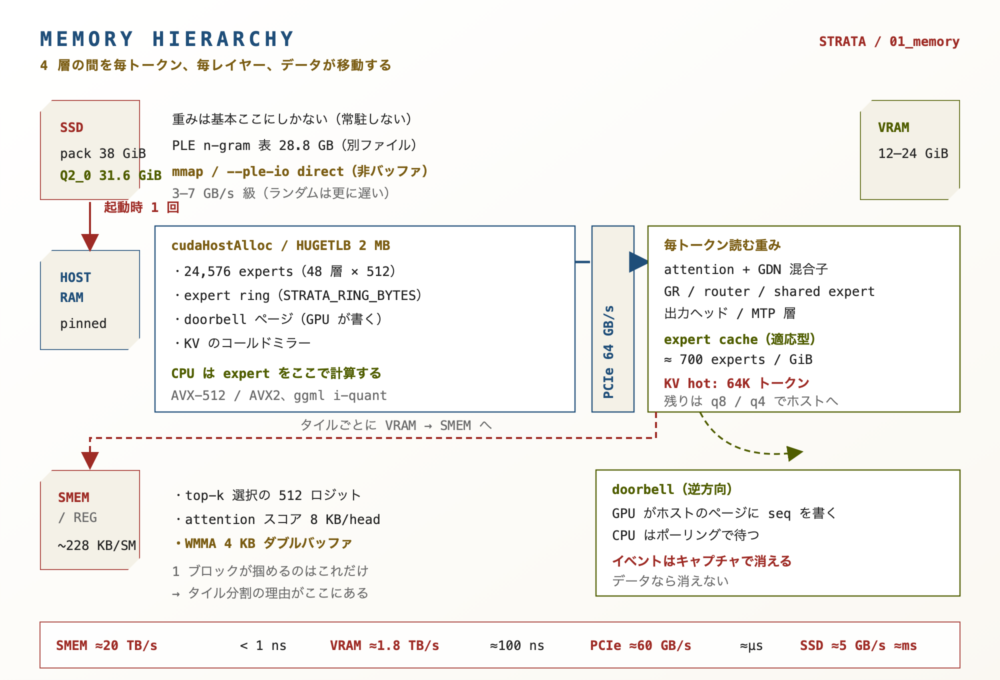
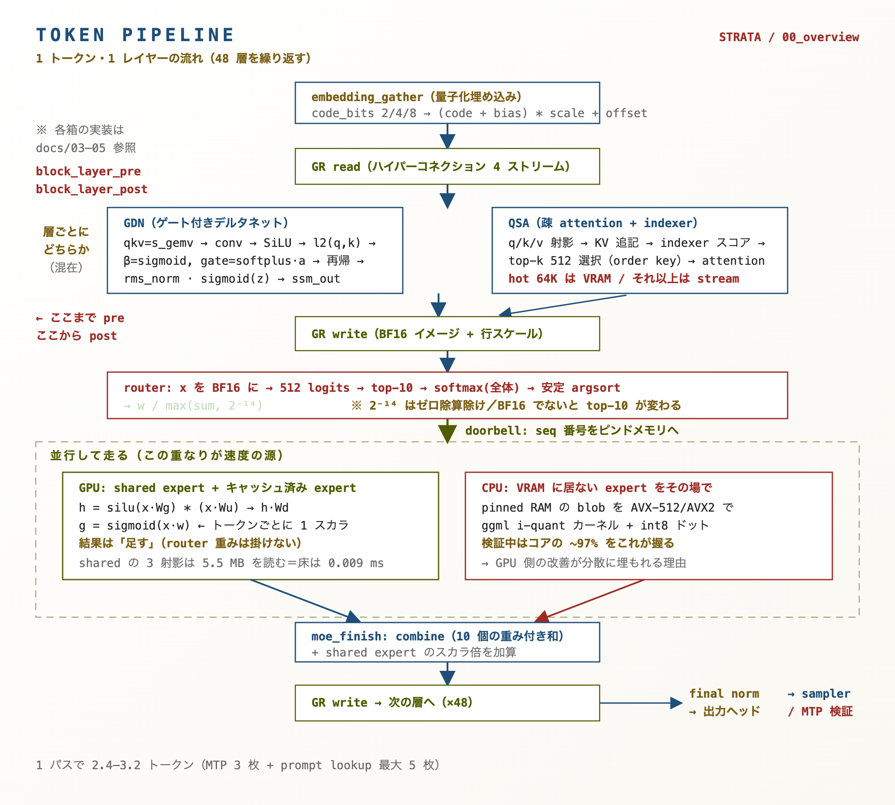
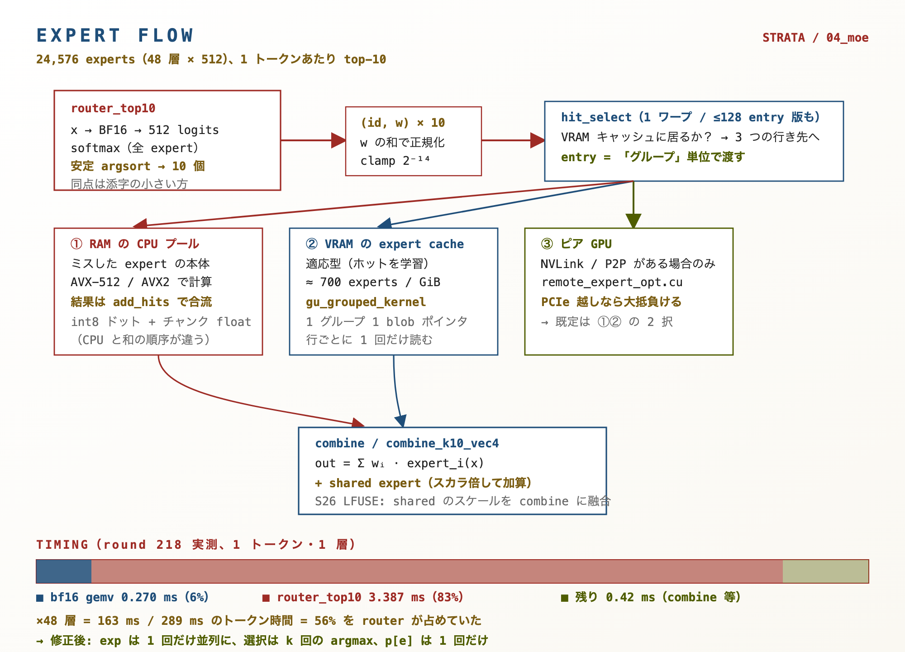
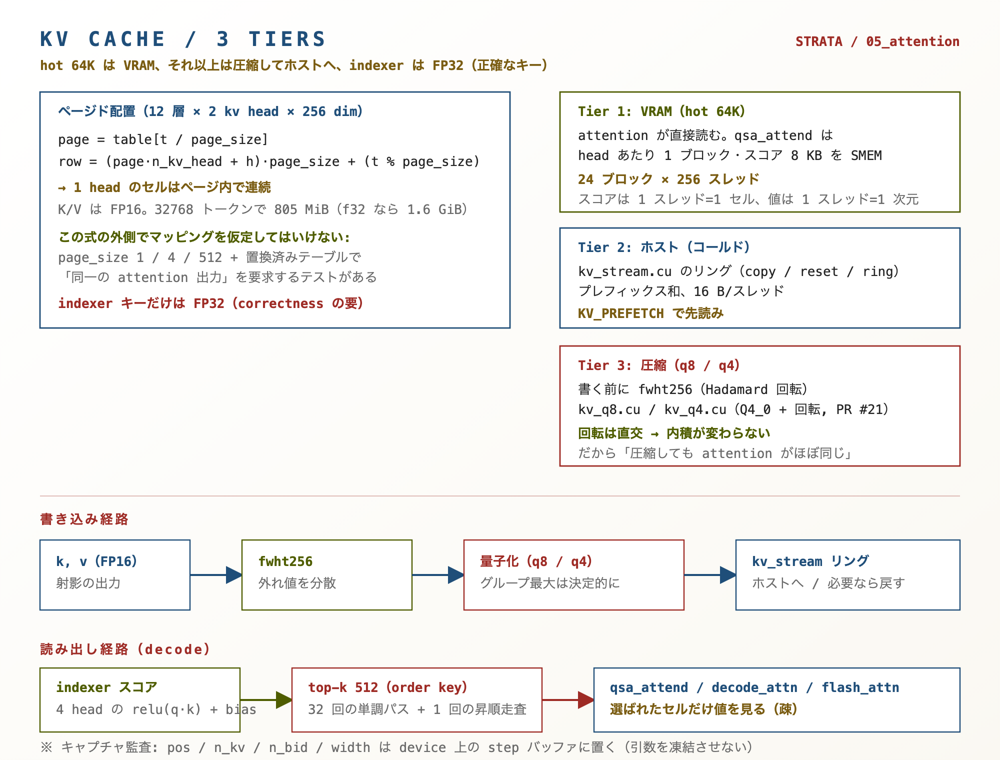
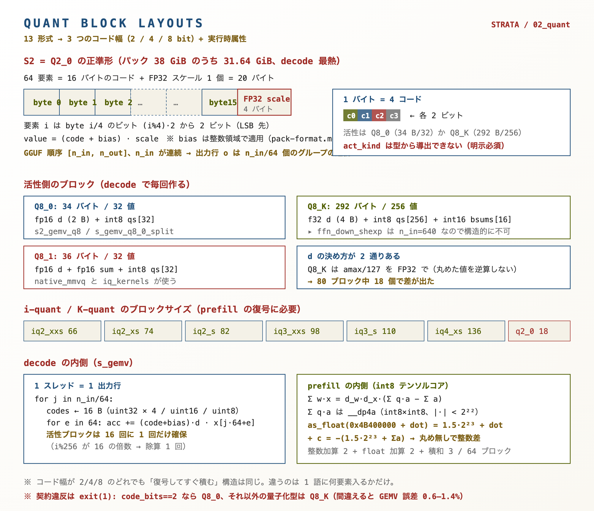
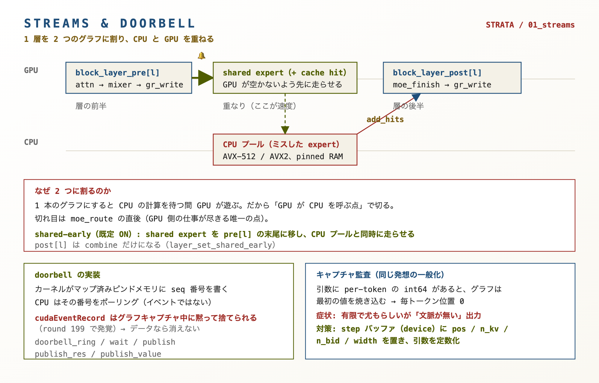
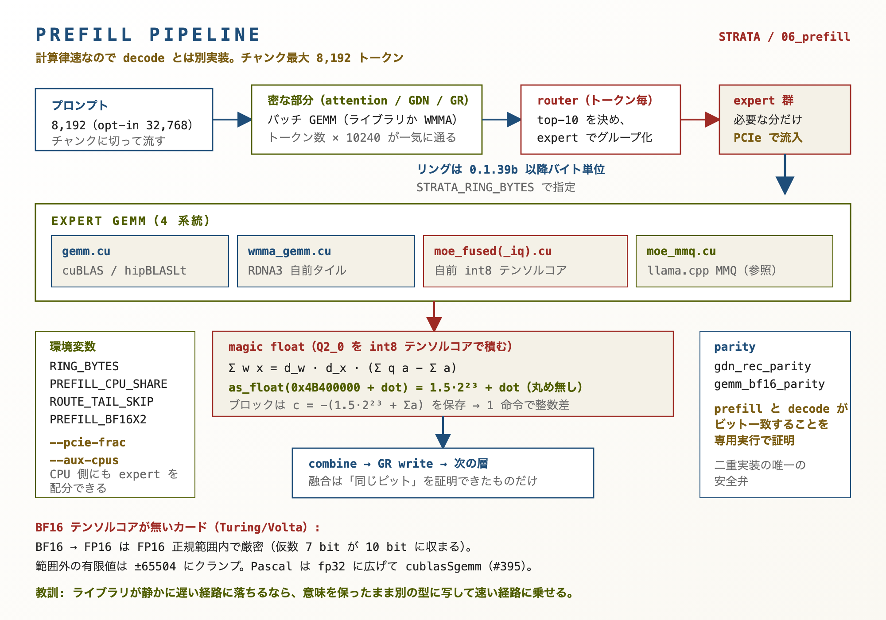

対象は Qwen3.8-Flash-Next 125B（48 層 × 512 expert = 24,576、top-10/token）を動かす Strata の CUDA/HIP 実装。57 ファイル / 34,312 行を 9 章に分け、 全章に「なぜそう書くのか」の解説と、データがどこをどう動くかの図を付けた。
| 対象 | Qwen3.8-Flash-Next 125B（48 層 × 512 expert = 24,576、top-10/token）を動かす Strata の CUDA/HIP 実装 |
|---|---|
| 規模 | 57 ファイル / 34,312 行（cuda 45 · prefill 9 · core 3） |
| 構成 | 全 9 章 + 図 7 枚。各章に「なぜそう書くのか」の解説とメモリ移動の図 |
| リビジョン | HEAD 61b3fb5（v0.1.49） |
| 読み方 | まず 00（総覧）と 08（目録）→ 図で流れを掴む → 該当章 → ソース |






